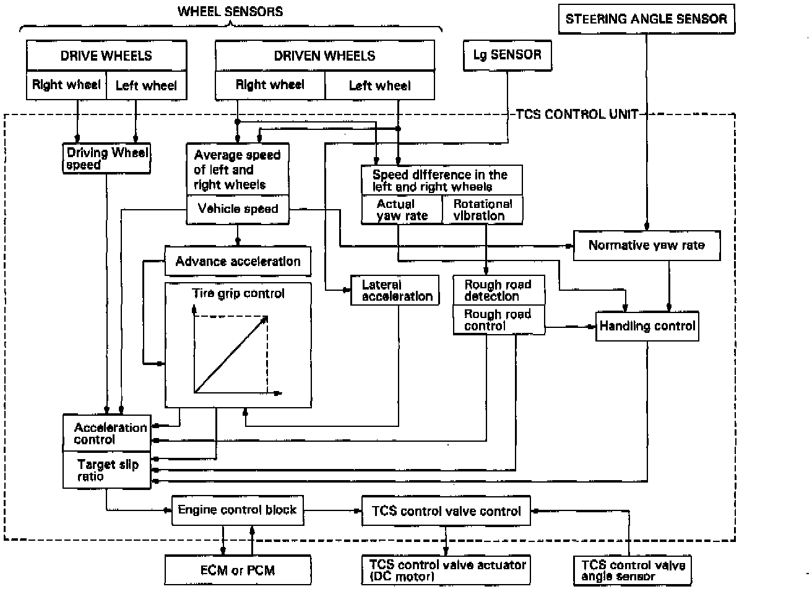
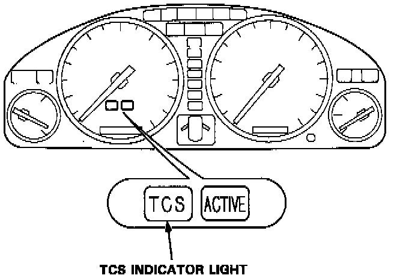
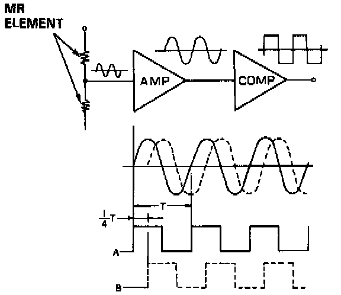
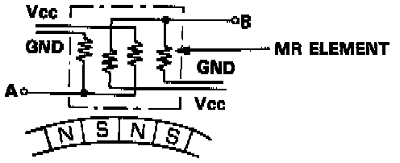
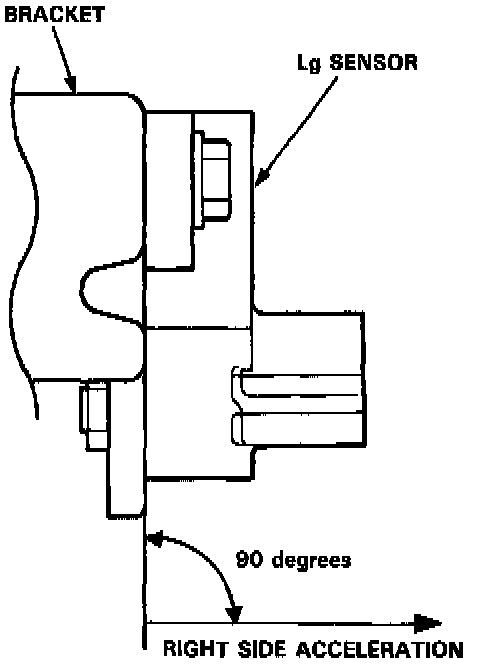
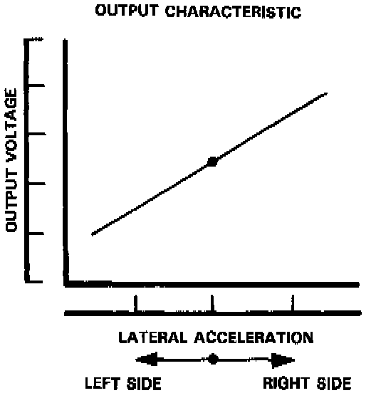
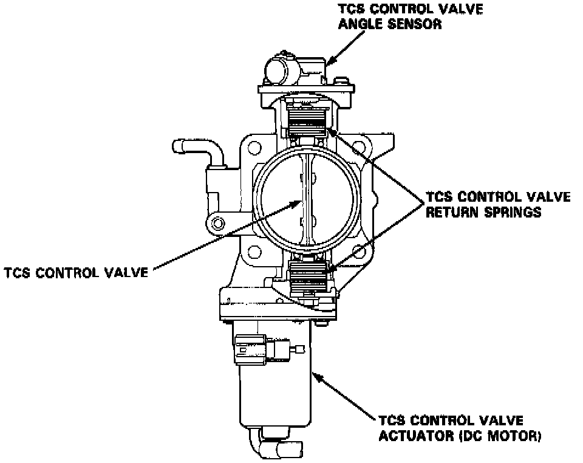
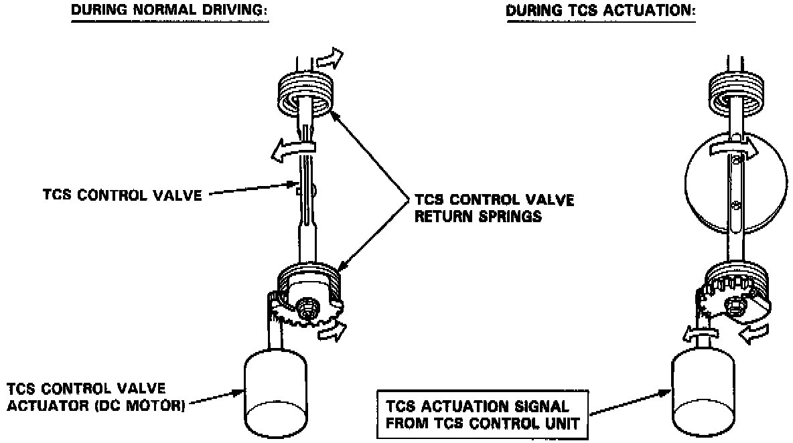

Construction and Function

Acceleration Control:
The TCS control unit gets signals from the wheel sensors about the rotational speed of each wheel. Traction control is activated when the rotational speed of the driving wheels differs from the rotational speed of the driven wheels (i.e., vehicle speed).
Handling Control:
Based on signals about the left and right driven wheel rotational speeds, the control unit calculates the car's "yaw" rate (i.e., the turn rate of the car's body). Based on signals from the steering angle sensor and driven wheel sensors, the control unit also calculates the yaw rate expected by the driver. If the difference between actual and expected yaw rates is substantial-that is, if the direction of the car's body will exceed the driver's expected line-the control unit signals the TCS control valve actuator, and ECM or PCM, thus reducing engine power and maintaining the expected line.
NOTE: M/T-equipped cars use an Engine Control Module (ECM). A/T-equipped cars use a Powertrain Control Module (PCM), which also controls transmission functions.
Rough Road Control:
Based on signals from the wheel sensors, the control unit detects a rough road based on frequency of wheel rotational vibration. The control unit then signals the TCS control valve actuator, and ECM or PCM to relax engine power, thus improving acceleration efficiency.
Grip Control:
Based on signals about wheel speed and from lateral acceleration (Lg) sensor, the control unit determines the efficiency of the grip of the tires on the road and signals the TCS control valve actuator, and ECM or PCM to relax engine power if necessary, thus improving grip.
Fail-Safe Function:
If the control unit detects an abnormality, it shuts the traction control system off and causes the TCS indicator light to come on. However if the abnormality is detected while the TCS is activated, the control first establishes the appropriate wheel spin velocity, then shuts the system down, thus preventing excessive wheel spin.

Self-Diagnosis Function:
If the control unit detects an abnormality, it records a Diagnostic Trouble Code (DTC) which can be used to diagnose the problem. The code is shown at the TCS indicator light when the Service Check connector terminals are connected with a jumper wire.

Steering Angle Detection
Steering angle is detected by the steering angle sensor, located on the steering column. The sensor uses two magneto resistance elements to determine steering angle and direction of rotation. When the driver turns the steering wheel, a magnet in the steering shaft generates waves in the "MR" elements. These waves are amplified and converted into signals which the control unit can interpret as angle and direction of turn.


Vehicle Speed Detection
Wheel rotation speed is detected by the wheel sensors, located at each wheel. The signals are sent to the control unit, which compares each wheel's speed and determines whether traction control is required.


Lateral Acceleration Detection
Lateral acceleration is detected by the lateral acceleration (Lg) sensor located behind the rear seat-back. The Lg sensor varies the output voltage in accordance with the left or right side acceleration and sends it to the TCS control unit as a lateral acceleration signal.


Engine Output Control
When the TCS is activated, the TCS control unit signals the TCS control valve actuator and ECM or PCM. The actuator is linked to the TCS control valve which is normally returned to fully open position by the two return springs. Although the throttle valve is still within the driver's control, the engine output is relaxed by the TCS control valve and ECM or PCM to achieve optimum traction.